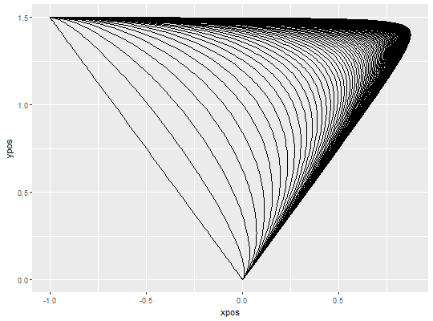

bezier creates 3-point Bezier-curves using the
Bernstein approximation to simulate continuous competition
in mouse- and hand-trajectories.
bezier(x = c(0, 1, -1), y = c(0, 1.5, 1.5), w = 1, resol = 100)
| x | a numeric vector giving the x-coordinates of exactly three Bezier-points. Defaults to c(0,1,-1) matching the 'mt' format in mt_align. |
|---|---|
| y | a numeric vector giving the x-coordinates of exactly three Bezier-points. Defaults to c(0,1.5,1.5) matching the 'mt' format in mt_align. |
| w | a numeric value or vector specifying one or several Bezier curves,
with |
| resol | a numeric value specifying the spatial resolution of the bezier
curves. For example, |
A trajectory array containing the bezier curves.
# Generate range of Bezier-curves bezier_curves <- bezier(w=seq(0,10,.1)) # Plot curves mt_plot(bezier_curves)